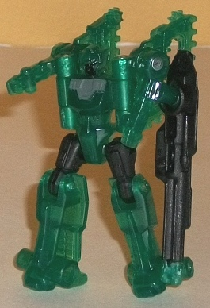
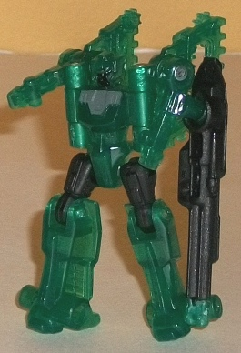
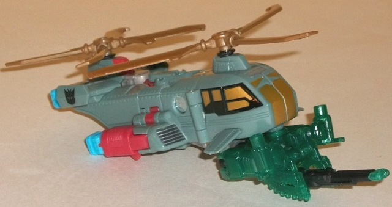
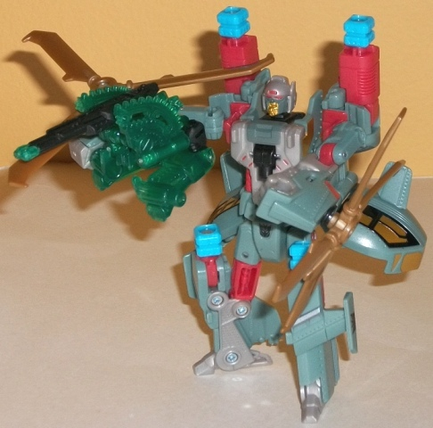
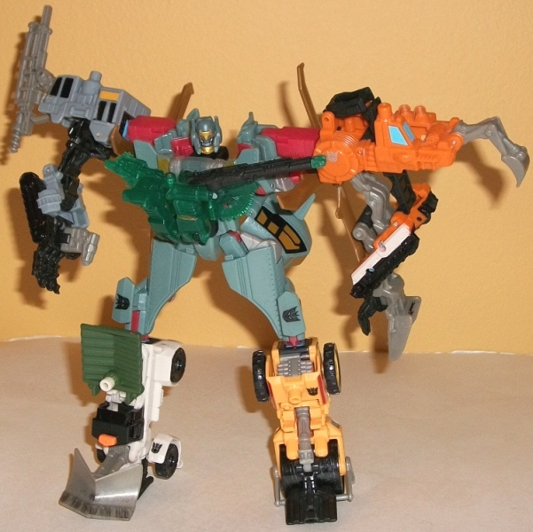

Darkray
Darkray

Allegiance : Minicon
Difficulty of Transformations : Very Easy
Color Scheme : Translucent dark forest green, black, and some dark pasty gray
Individual Rating : 5.6
Windburn
w/ Darkray
(NOTE: Because this set is composed of repaints,
this is not a full-blown review. This mainly covers any changes made to
the set and the color scheme, and merely compares it to the original versions
of these molds. For a review on Caliburst, the mold used for Darkray, go
here
.
For a review on Searchlight, the mold used for Windburn, go
here
.)
Darkray

Allegiance
: Minicon
Difficulty of Transformations
: Very
Easy
Color Scheme
: Translucent dark forest
green, black, and some dark pasty gray
Individual Rating
: 5.6
Darkray, fittingly, is
quite dark-colored. Although he's
partially
transparent like almost
all of the other Power Core Minicons, his green plastic is slightly more
"solid-looking" and lets through less light, making the dark green seem
all the darker because of it. It's quite a nice shade of the color regardless.
Black is the secondary color on the figure, and serves as a decent enough
complementary color. However, Darkray needs one little light accent color
to really make him pop. All the silver paint on the pieces on this mold's
back is gone, witn only a painted face and dark gray upper chest now. Both
colors look good enough, but personally I would've perhaps made the gray
red to "lighten him up" a bit.
No mold changes have
been made to Darkray.
Darkray has a pretty
interesting main color, and I think pulls off the mold's look slightly
better than its predecessor Caliburst. His weapon modes also work quite
well with Windburn, to boot. That said, a few more paint apps (particularly
some light ones) couldn't have hurt.
 Windburn
Windburn



Allegiance
: Decepticon
Difficulty of Vehicle/Robot Transformation
:
Medium
Difficulty of Torso Transformation:
Easy
Color Scheme
: Pale dull green, pale
red, milky brownish gray, dull brownish gold, and some light sky blue,
black, pale metallic gold, dark jungle green, light red, and dark silver
Individual Rating
: 8.6
Windburn's color scheme
is certainly unique. I'm not necessarily saying that that's a bad thing,
mind you, but the combination of pale jungle green with pale red and gold
is quite a unique color combo that isn't really done often. However, they
all go together quite well, with none of the main colors seeming to "overpower"
the other, and each accenting the others quite well (particularly the gold
against the green). Even the sky blue combiner pegs contrast nicely against
the red plastic pieces they're attached to. A rather blah shade of that
accursed milky gray is used for some of Windburn's robot parts, but it
doesn't outright clash with the other colors and isn't used that much,
so it's a bit easier to overlook in this circumstance. Windburn has quite
a few paint apps, particularly on his robot mode chest and faces-- the
contrast of the red against the gold and gray on the chest, and the way
all of his main and secondary colors come together on his faces, really
looks nicely and brings out his mold detailing there that much more. (The
light red on the eyes is the perfect touch for an eeeevil Decepticon on
what is otherwise an Autobot-looking mold, too.)
No mold changes have
been made to Windburn.
Windburn is a pretty
decent "evil" redeco of Searchlight, and has a really unique color scheme
that both matches the traditionally "cold" colors of Decepticons while
not looking TOO out of place on a chopper (the red excepted). Recommended
a little over Searchlight, so long as you don't mind a slightly "funkier"
color scheme over a more realistic one.
Reviews by Beastbot